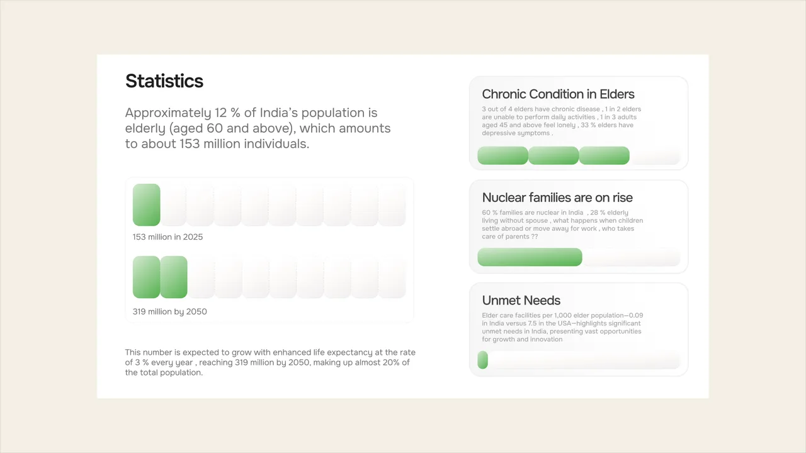
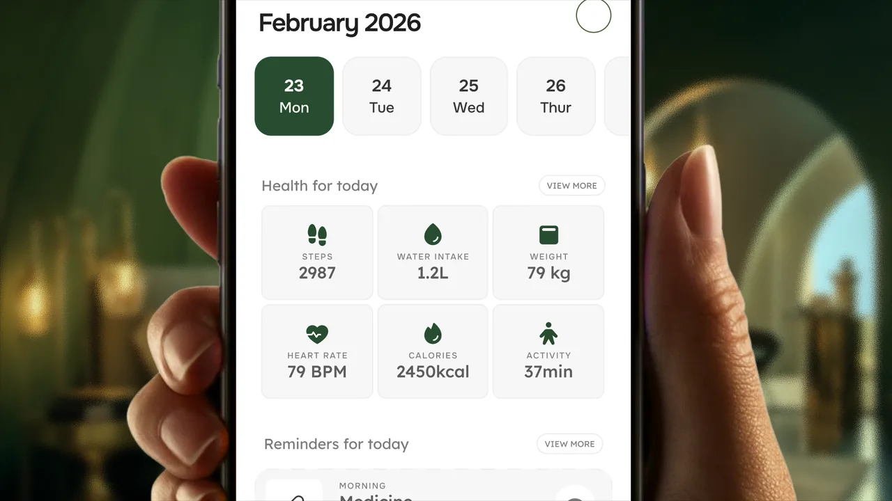
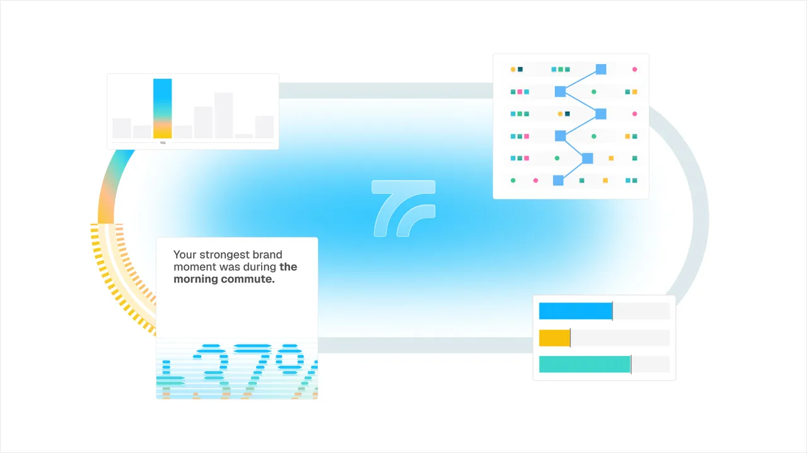
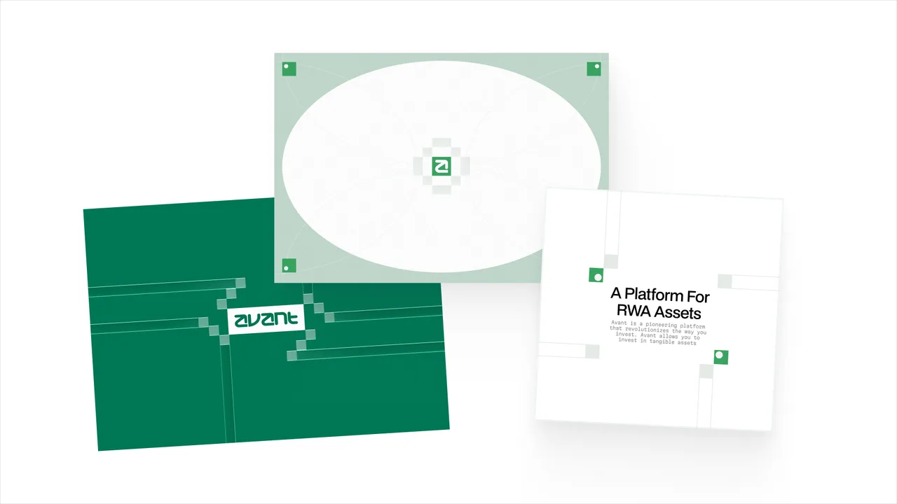

Every startup starts as a story. I help founders tell it through brand, product and marketing, so the idea feels real from day one.
Scroll ↓ — horizon transition prototypeA few favourites from the archive.
2021 — 2026



